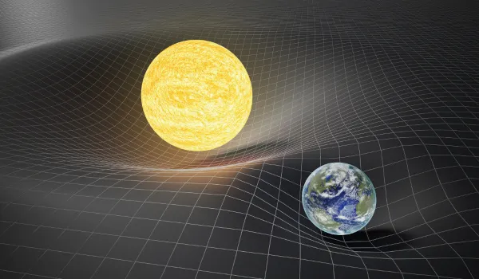
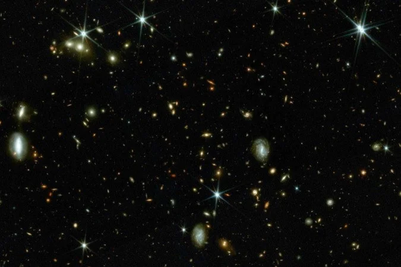

Buracos Brancos e as Hipóteses da Cosmologia Relativística

Representação artística de um possível buraco branco liberando matéria e energia.
Os buracos brancos representam uma das hipóteses mais incomuns da física teórica moderna. Diferente dos buracos negros, estruturas conhecidas por absorver matéria e luz, os buracos brancos seriam regiões do espaço-tempo capazes apenas de expelir conteúdo.
A teoria surge a partir das soluções matemáticas da relatividade geral de Einstein. Em determinados modelos, as equações permitem a existência de estruturas opostas aos buracos negros, funcionando como possíveis “saídas” cósmicas.
Embora nenhuma evidência observacional tenha confirmado sua existência, os buracos brancos continuam presentes em debates envolvendo gravidade quântica, singularidades e origem do universo.
Fundamentos Teóricos
Em teoria, um buraco branco impediria completamente a entrada de matéria. Tudo em seu interior seria expelido continuamente para fora do horizonte de eventos.
Enquanto um buraco negro distorce o espaço-tempo para dentro, o buraco branco realizaria o processo inverso, liberando partículas, radiação e energia.
Alguns físicos sugerem que ambas as estruturas poderiam estar conectadas através de pontes gravitacionais conhecidas como buracos de minhoca.

Simulação digital da deformação gravitacional do espaço-tempo.
Relação com a Cosmologia Moderna
Alguns modelos cosmológicos propõem que o Big Bang pode apresentar propriedades semelhantes ao comportamento teórico de um buraco branco.
Nesse cenário, o universo teria surgido a partir da liberação extrema de matéria e energia concentradas em um único ponto gravitacional.
Apesar de altamente especulativa, essa hipótese continua sendo discutida em pesquisas relacionadas à gravidade quântica e à estrutura do universo.

Observações do universo profundo ajudam cientistas a estudar estruturas extremas.
Limitações Observacionais
Até o momento, nenhum telescópio identificou evidências diretas da existência de buracos brancos.
Alguns pesquisadores acreditam que essas estruturas possam ser instáveis, extremamente raras ou simplesmente incompatíveis com as condições do universo.
Mesmo assim, os buracos brancos permanecem relevantes em discussões sobre singularidades, causalidade e comportamento do espaço-tempo em escalas extremas.